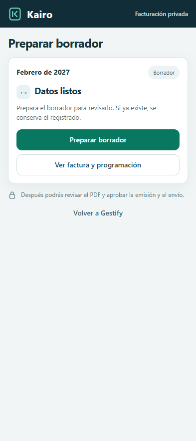
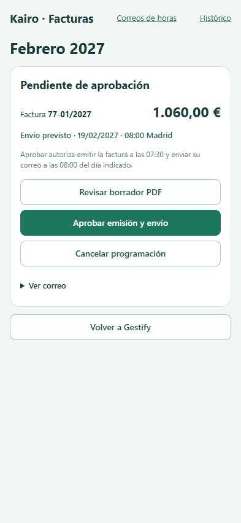
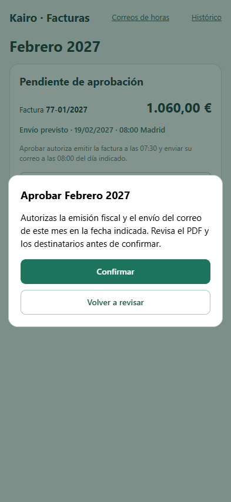
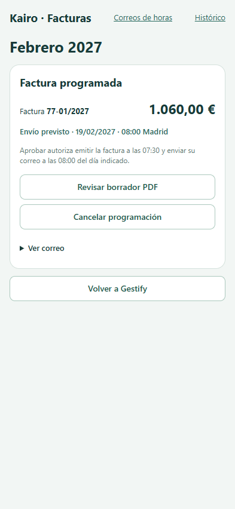
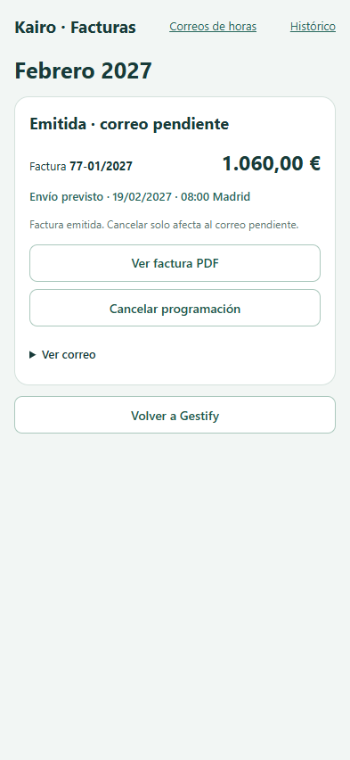
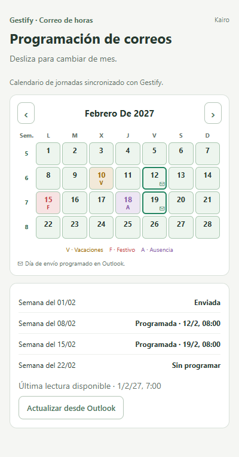

Revisión visual de Kairo
Capturas móviles de las plantillas de Kairo con una factura y correos ficticios. Pulsa una imagen para ampliarla. Puedes referirte a cada pantalla por su código, por ejemplo «K3, botón de aprobar».
Desde Gestify
Al enviar los datos del mes, Kairo prepara un borrador. La revisión mensual reúne el PDF, el correo y la decisión de aprobar.






Los cuatro pasos de Kairo
Esta es la vista «Revisión y ajustes» de la web de facturación. Los números corresponden a sus cuatro pestañas.


Después de aprobar
El mismo mes pasa de programado a emitido y finalmente a enviado cuando Kairo tiene la confirmación correspondiente.





Correos de horas
Gestify y la navegación de facturación de Kairo abren el mismo calendario. El sobre marca un envío confirmado y la lista inferior identifica la semana.

